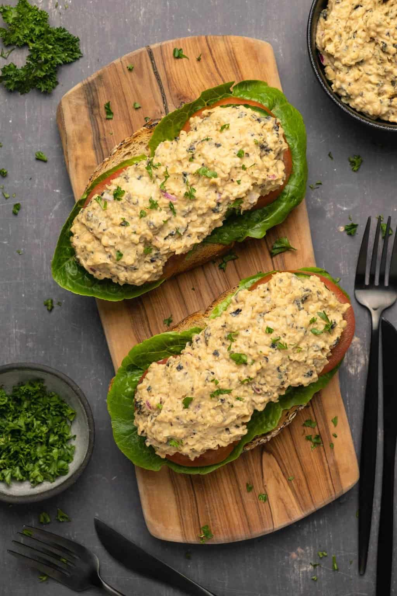

Chuna

Description
Chuna is a vegan version of the tuna salad, with chickpeas instead of tuna.
Ingredients
- 420g tin of chickpeas
- 6 tbsp vegan mayo
- half finely chopped red onion
- 1 tbsp chives
- 1 tbsp copped capers
- 1/2 tsp dijon mustard
- 1 tsp ketchup
- 1 sheet seaweed hydratded and finely chopped
Steps
- Add chickpeas and mayo in a bown and mash it
- Add the rest of Ingredients to the bowl
- Season to taste
Home